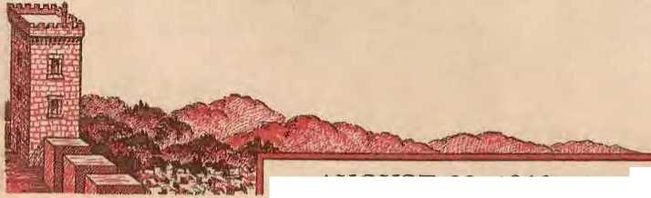
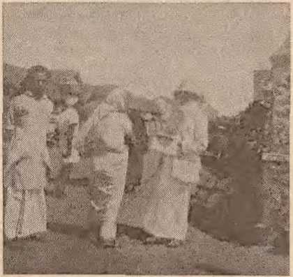

How to be on the alert in a busy but blind world
The trials of India's populace lightened by Theocratic activities
Placmg responsibility for moral degeneration where it belongs
Identifying God's spirit and its workings
AUGUST 22, 1946 semimonthly
THE MISSION OF THIS JOURNAL
News sources that are able to keep you awake to the vital issues of our times must be unfettered by censorship and selfish interests, •Awakk!” has no fetters. It recognizes facts, faces facts, is free to publish facts. It is not bound by political ambitions or obligations; it is unhampered by advertisers whose toes must not be trea.d upon; it is unprejudiced by traditional creeds. This journal keeps itself free that it may speak freely to you. But it does not abuse its freedom. It maintains integrity to truth.
"Awake!" uses the regular news channels, hut is not dependent on them. Its own correspondents are on all continents, in scores of nations. From the four corners of the earth their uncensored, on-the-scenes reports come to you through these columns. This journal's viewpoint is not narrow, but is international. It is read in many nations, in many languages, by persons of all ages. Through its pages many fields of knowledge pass in review—government, commerce, religion, history, geography, science, social conditions, natural wonders—why, its cover* age is as broad as the earth and as high as the heavens,
"Awake I" pledges itself to righteous principles, to exposing hidden foes and subtle dangers, to championing freedom for all, to comforting mourners and strengthening those disheartened by the failures of a delinquent world, reflecting siure hope for the establishment of a. right* eous New Woriel.
Get acquainted with "Awake!" Keep awake by reading "Awake!"
v^^UP.J.,a^^^^u
PUDLJ8HED StMlMONT.li:Lr Br WATCHTOWER BIBLE ^AND TRACT SOCIETY, INC.
117 Atos Street Brooklyn 1, N". Y., U. S. A.
N. H. K:maa, President W. E. VAB amburgh, Secretary
Five cents a copy
Romlttances: Pl^oso ronllt bY pO;Otal note or by ^iULI ot wuIItl)' otdor or ]»• b&ok drart. Wh^n or curroncy ls loor In tho otdloary flails. tboru b uo redrew. Rwollt3^= !rom rountris whoto the So<;lO!J luu’ U» urjnch Qlccs rnmay he mOld< to the Brooklyn otlre, hut onlY bY lulcrtMUncal N"‘'"l mouer t>rd<r. II<-ce(pt or o nei< nr "'oe.-.i snhsr,riplion wil h^ acknow*ltd^<d oul when reQuCsted.
Noncfl to SnisCRiBt:ns
One dollar a year
NOiw ot explratiOA: Sncll notko Is sont roth thft Journo.l at iL^ast two uncs b<!oto tile ilb^ corlpUon expires. Pleaso rtcew promptly.
CbariVe of address: 1'liasu Fund uny ebanll) ot iwdr""’ direct to us rt.lhur tban to the pust nlloo. Your requ<-st sbouta reeb tU at least lbr<!i> we^ Heloro the date of luue wllb whleb II Is to tAke •fleet. Send your old as well as tbc ucw addrc$1;.
Emet.ered .. noohd^clnr.;o mauor at BM0il1lt. :1. Y., Act or Mureb 3, 1879. Printed 1D U. B. A.
CONTENTS
Wake Up, World!
Asleep or Bind '1
What Is the Remedy?
The Command to Awake!
Arns aud Purposes
Music Is JIedieine
A Trip in TravancorC: Intlin
Bible Influenco
Travel facilities Theocratic Actitili^ A Jungle Kingdom Hnll Demon Activities
|
3 |
Juvenile Delinquency or Adult Delinquency? |
16 |
|
4 |
Deeper Reasons, ancl the Remedy |
17 |
|
5 |
"Personal Representative” to Vatican |
18 |
|
6 |
Color, the Glory of CreaLion |
19 |
|
7 |
The Stream of Life |
21 |
|
8 |
Revealed to Solomon |
2ii |
|
g |
"Thy Word Is Truth” | |
|
9 |
Spirit Operations |
24 |
|
io |
Freedoms Restored in Two British Colonies |
26 |
|
10 |
PainfullyLate |
2fl |
|
13 |
Progress Slow in British Guiana |
27 |
|
15 |
Watoblng the World |
29 |
^'Now it is high time to awake.'!_Romans /J:/1 9j
Volume XXVff Brooklyn, N. Y., August 22, 1946 Number 702
WAKE UP, WORLD!
WHO says the world. is asleep? Is this not the fastest-moving age in aU history? Does not every aspeet of human life and endeavor on this globe throb with energetic activityt News and information continually crowd the channels of c o mm unic a ti o n, where it travels by radio and by wire with tlif' speed of light. Wliere, then. is there any sign of sleepiness, or any necessity for this world and its people to awaken?
Like a paradox, the world is very much awake to some things, while, at the same time, It is indifferent to the more important happenings. Individuals of the world conscious of the lesser things are sound asleep to the most important matters. Pearl Harbor is bombed! In a moment the whole world knows about it. But do they know why such bombing was not prevented 1 The people hear that Rome escapes bombing; but do they know why 1 ‘rhe Normandy heaclies are struck with the impact of modern warfare, and shortly thereafter the nations hear that G ermany is beaten. But do the millions of returned soldiers know what they were fighting for? Japan surrenders! In a flash the world learns about it. And yet, do they know why Worlcl War 11 has not officially ended, but continues to this very d.ayf An atomic bomb is dropped on Bikini and the world is tuned in to hear it explode, but how many peace-loving people realize the significance of such experimen ? Of a truth, the world seems to he awake to the outward or surface appearance of events, but most people of the earth are totally unconscious of the underlying causes of these happenings and the effects such have on man's destiny. Tbey are iu fact as leep to these all-important matters.
“CONSOLATION" magazine is m longer [lublishtd, but the good services it performed do not come to an end. It has been replaced by the new and up-to-date magazine "AWA^!1’ This is the first issue of the new jourunl. Rend it, and see if you do not enjoy its general artieles aml its special features. Consider its mission, as expr^^ed on pnge two. '.rb.is leading article gives further information on. the aims and pnrposes of the new journal. ''Awake:" is semimonthly, and we hope that you wil find ple^^e .in reading regularly each issue.
In the field of science
. and in v e n t i o n the world of mankind is in the same plight. From all outward appearance it would seem that tremendous forward strides have been made in those parts of the earth where scientific research has been promoted. Here me.n no longer live in tents or travel by oxcart. Instead, they live in comfortable homes and are abl e to transport themselves to any part of the earth in a matter of a few hours. They no longer plow their land by hand or send letters to distant points by courier 011 foot. Thev have learned to harness electricity and use it to turn the wheels of industry. Their knowledge of higher mathematics enables them to solve the engineering problems encountered in nuu:lR production. They even say they are winning the war on disease and pestilence. There iti no question tlait wan's technical knowledge of these material things is very great.
However, in spite of such learning scientists are absolutely blind to the world-shattering signiicance of their discoveries. [t is admitted that it takes technical skill to build an electronic calculating machine that is ahle to work mathematical equations a thousand times faster than lmmaus, but it takes more than technical skill to build a robot calculator capable of solving the weighty problems confronting the nations of the earth. Those who think they are awake will say that the scientific progress, which they call "miraculous", is proof that man has entered a better and finer world—u synthetic, atom-smashing, jpt-propelled, radar-controlled, electronic world-in this twentieth eeuturv. But do those who say such things have their eyes open wide enongh, or are they awake enough, to explain why men, tliongh ahle to talk around the earth, see beyond the horizon, and bounce radio signals off the moon, are, nevertheless, so immature and undeveloped that they still wallow themselves in a dilemma of strife, sweat and blood?
Are the "theoj^etical" or "imre" scientists, who gaue into the expanse of the universe and peer into the miniature world of the atom there to learn about the phenomena of creation, able, because of their learning, to answer the question? 01' do they too draw erroneous conclusions from their findings and hastily support destruction and death rather than construction and life 1 The folly and stupidity of these eminent men become even more apparent when it is learned tliat they are now laboring to produce a cosmic ray bomh having a destructive force incomprehensively greater than that of the atom bomb.
Asleep or Blind? ,
And what ahout economic conditions? Are individuals of the world more alert to :melt problems than they are to scien-tiJic developments 1 They are fully aware that there is a great crisis in the world’s food supply. TheY know that production is far behind the needs of the peo-pJe, that there is a scarcity of clothing and a shortage of homes, that the cost of living soars higher and higher with inflationary processes on the move in many parts of the earth. All of this is common knowledge. But do the people know the l'anse of these crippling conditions ? Do they make any effort to find out why. at a time like this, there are unemployment and strikes and curtailments in production i Are not the people in general asleep when it comes to knowing the portent of Ihese conditions? They cry because of taxation and government regulations and restrictions as rationing continues to hold the people down and prices for consmiier goods skyrocket in many countries of the earth, and yet the reasons for such situations do not concern the man in the street, who apparently is asleep. The masses are very much alive to tlieir own suffering but aTe insensible to the moving causes of such misery.
Social problems of race hatred and discrimination, the problems of child delinquency, and parent delinquency alr:;o, and the problems of crime and widespread moral degeneracy, are all extensively publicized. But the very fact that they remain baffling problems show that the leaders of this world are unaware of the origin of these things and hence unable to strike at the root of the trouble.
Going on to the bigger problems of international importance, the same mental condition on the part of the ruled as well as their rulers is found to exist. There is a mental stagnation and indifference on the part of the people to search ont the real causes and remedy for the intolerable and killing world conditions. The ilhu;ion of a man-made "better world" was held out hefore the people to sustain their spirits during the recent war. The result is now here. Therefore let creatures awake aurl look soberly and realisticaliy at this so-called "new order" of (JN.
Are people so blind, or are they so asleep, that they cannot see that it is the same old world of strife, nialit>e and hatred'/ 'There if; India and her millions with their mixed creeds and races; Palestine and lier double-sided issue; Egypt and Iran and Greece; Poland and Finland, anil the other countries from the Balkans to the Baltic; there are the oiice-occupied countries of France, Belgium and the Netherlands; the one-time "nxis" partners of Germany, Italy aud .Japan, in addition to the so-called ''neutral" conntry of Spain; and there are the miglity countries of China and Russia. One and all alike, th:se governments have problems of such intemationnl moment that there can never be a lasting peace until they are solved. A divided wodd it is, a world of disunitv and confusion, oiw that the Greeks would call chaos. Truly. the world is in a fmincnt and the people are intoxicated with the spirit of selfishness, pride and ignorance. Never was there a more urgent need for a sobering, stabilizing and awakening influence than there is today.
What Is the Remedy?
From tin; mournfnl condition the people Reck relief for their distressed minds by plunging themselves into wltat they call •‘entertainment", by rewiry in an effort to brace up their fainting spirits and drown tliei I’ sorrows. The rarlio and television, by drama and by propaganda, servo the people in this respect. People aloo attend tJw theater where they see conditions, not as they are, but through colored glasses which show a glamorized make-believe world. Some persons’ jagged nerves are soothed by listening to music, while many others lind refuge from the cares of this world ty attending or participating in va;‘?ms sports events. H is not an exaggeration to say that the people ol' this pleasure-crazed world are entirely ignorant of the means whereby they can find real happiness.
And what is this sure tmd complete remedy for world woes? Is it the United Nations organization 1 No, it is not tlutt howling ch.ilcl that was brought forth by a dazed and stupefied world suffering the after-effects of a tenihle war. But do not the international physicians proclaim this child the new-horn savior of the world 7 and do not credulous people crown it as the futnre ruler of the nations 7 Yes, they do; but this is only proof of their hlindnes::;. OnJy those who close their eyes to the facts will Ray that selfish, imperfect and greedy nmm of a thousand tongues, and having as many cultures and creeds, can live and work together in unity and peace. Only those who close their ears to past history will say that capital and lahor, communism and fascism, and Catholicism and Protestantism, mnke np the building lilocks of a lasting peace .structure. Only the blind woulrl proclaim that the assembled delegates from the various nations can estaltlhdt a lasting peace in a conference hall at the same time tliat their individual governments are hysterically preparing new and more destructive weap-OH::> for u::;e in a third world war. Totally blind must tliose be that promise peace and safetv when an atomic bomb hangs precariously above the world suspended by the mere thread of tricky diplomacy.
And there ar^ many other remedies that arE' put forth as cures for this dying old world. Some are ‘’left”, some are "right''; some of one color. some nf another. Eaeli has its own formula for balancing the world’s supply and demand; each has its sages and seers, prophets and preachers i each has its "sales tnlk". One says: ''Religion alone has the answer for humanity's twentieth century cry of dispair.' ( Trnmau) .Another says : ''In my opinion, he [Pope Pius XIIJ is one of the foremost figures working for world peace." (Grace Moore) There nre many other ‘‘i!:)rns" that are championed in the open forum of public opinion, but. totaled up they are only vanities or nothingnesses. Those qualities which are necessary to aeJiieve great political aud social reforms tlieHe leaders laclt, but worthless oratory tli-.-y conurmnd in abundance. In fact, Un?ir wincly taiJ, is what constitutes the thin "new order" gown that is draped around the old battle-seaned world.
But through this sheer synthetic costume is seen the same Big Three in control, the l3ig Three wbo never agree, tliat is, Commerce, Politic!:) ancl Heligion. Their mighty men are the leaders of this world, and the peoplu blindly follow these leaders who have no vision . .And what is the result H Let tlui wispst man tliat ever lived on this earth answer that question. He said: ••If tJjf' blind lead the blind, both shall I' all in to the ditch." Those words were prophetically spoken by Christ Jesus (Matthew 15; 14). and no one can deny that tliey are now ful-fHlf'd, for the whole world is hogged down in a muddy ditch. ll'farcover, in fulfillment of prophecy it is observed that ’darkness covers the world and gross darkness the J>eople'. How true it is: "Wherr there is no vision. the people perish."—-Isaiah 60: 2: Proverbs 29: 18.
The responsibility for this condition must be borne to a large measure by the political, commercial aud religions lenders; for, indeed, none an;. so blind as these who have "eyes r to see the facts I. and see not; which have oars [to hear the warning], and hear not". (Jeremiah 5: 21) Isaiah the prophet gives a hril-liant description of these leaders: "They are all ignorant, they are nil dumb dogs, they cannot bark; sleeping [Hebrew, "talldug in their sleep"J, lying down, loving to slumber." (rsaiah 56: 10, margin) It is therefore plain that any effort spent in trying to awaken the blind and sleepy leaders would be lost.
The Command to Awake!
Be it noted, however, that those who have followed the willfully blind leader’s have been deceived and kept in ignorance, but iwt willingly so. There is hope for such. Hence, the cry is: "i\wake. for the climax of the ages is here I" The issue jg not politics versus economics, or state versus man, or man versus man, nor is it the atom versus man. The issue of the ages is Devil rule versus noel rule, the old world of wiclmdness against the new world of righteousness.
Are you a lover of righteousness 1 Do you sigh ann cry because of the wickedness tluat you see done in the world? Do you wonder what lies behind the mysterious current events tlw.t arc occuning in the earth today? If so, then lift up your head and rejoice, for now it is possible for your eyes to be opened so that yon can see the light of the new day through this present pall of darkness.
.And who is it that will open the eyes of these sincere people? Not the scientists who hnsy themselves forging new destructive instruments. They are able to smash nn atom, hut not the iron curtain of darkness; they can harness atomic energy, but not the passions of wicked men. Neither arc the coimnercial, polit-icn] or religious elements able, or willing, to enlighten those that sit in darkness. As for the great publicity agencies, U1e radio and jmblic press, they ha-ve miserably failed to inform the people. There are newspapers galore and magazines aplenty which hecloud the issues with tlicir multitudes of words, and so often, by distorting the news, they produce a deceptive optical illusion. The failure of these agencies to give the people right knowledge makes necessary now the publication of this magazine, Awake!
Thfl world Itas reached the crossroads and is entering the atomic age. Therefore, yon people of good-will of all nations should arouse yourselves and observe that tlte world is 'reeling to and fro like a drunkard' on the very precipice or dN;bwtion. "How may T escape ?" sh ould he the pressing question on your mind. To arrive at the correct answer vou must he alive and rU(lrt to what iR happening in the world. Take a keen interest ancl he quick to sense out the truth of mntiers. Not only learn the facts, hut weigh their import. Look not only at tlte :mperfirial, but penetrate, search out, cmd fll:-;covcr the suhterra-neal roots and meaning of world events. In doing so you will find this magazine a great aid and assistance. It is awnke to the universal issiws.
Aims and Purposes
On October l, HH9, the lirst issue of the Golden Llge magazinp wos published. Eighteen years later the name of the magazine was changed to Consolation. On July 31, 1941, the last issue of Consolation was published, and now A.u:ake! becomes its sncc('ssor. To all of the advantage:-; contuinpd in The Golden 4Lge and Consolation will lw u<lded timely information for the pnrpo8e of awakening men of good-will to the issues of life.
Integrity to the truth will he the highest aim of this magazine, and. therefore, it will publish thr truth without partiality aml without h)poerisy. It will have the courage to publish the facts as they are, nnd to champion God-given liberties sneli as freedom of speech and worship. H will not stop at expnsnre, at tearing down and rooting ont error, hut it will aim to present a remedy, to build np hope for tJie future, to comfort those that moum and to Rtrengthen those that sigh and cry because of the ahomina-tions clone in this evil world. Destructive evidence will be foil owed by eon-strnctive information; the hopelessness of the old world will bt> contraRted with the hopefulness of the nrw world. This is a Scriptural conn;(' to follow, for it is written that the Lord's servant, after rooting out, pulling down and destroying, should then proceed to build and to plant.—J eremiab 1: 10.
The articles aud statements of this magazine will be ba::ipd upon fully documented l'onrce material as proof. Dogmatic statements and tmproved assertions will be avoided. nnd editorial comment will be baRerl on solid argument, especially when dealing with controversial issues. Tltc magnzine will not serve as a channel for per.sonal opinion of‘ speculation on any suhject.
As for coverage this magazine will en-deavor to treat information from a world-wide rather than local viewpojnt. It will appeal to all honcat people of all lands. It will not hp a polifieul iiitiga-ziue nor will it preach nny C'rpcd; it will he frep from all sects awl creeds and doctrines of men. The latetit political, economic and rdigiom; dewelopments wil bp. dealt with in ::;o far as the-Re affect the people in general. Historical and geographical nrtielt>s will he presented from time to tinw, and educational and instructive information will he drawn from the field of science.
It will not he a one-man or on.e-nation magazine. but its contributors and corre-spoiilents wiJJ hp spread ont world-wide. LiYing in many lands anil under many conditions, they will be nhlc to make on-the-scene reports of happenings as they are, uncensored, and free of any nationalistic flavor. 'rhe material and contents of the magazine, therefore, will Ijc informative, edntatioual and interesting to the greatest, mtmher of persons, young and old alike.
Efforts will be made to make the style and composition pleasing in both its writing aml the way it is jji’intC'd. Good, readable type will be used, and short articles will he set off in r^elief from the heavier and more lengthy ones. Generally there will be a leading article and one or two secondary articles; also several shorter artieles covering many aspects of life. Short, pithy and concise items will tastefully season the magazine to the delight of its readers.
Tliere will be two out standing features regularly carried in each issue ‘•Thy Word Is Truth" will inspire faith in the Creator by having as its authority God's Holy Word, the Bible. The other feature of particular interest, “'Watching the World," will summarize world events and happenings. It will flash he-fore the reader a pieture of the world as it is seen hurrying on its way. The great volume of words published by the daily press wild be boiled down to crystallize the essentials for the reader.
Here, then, is a magazine of the highest educational value for all sincere and upright people of all races, creeds and nationalities. “Who hath ears to 'hear, let him hear," amd let him arise from the dust and darlmess of this old, musty world and come out into the light and freshness and freedom of the new world. Those who will do so will hear the King of the new world, Christ Jesus, say: "Blessed are your eyes, for they see: and your ears, for they hear.” (.Matthew 13: 16) Blessed, indeed, are those who aTe already awake to present worldshattering conditions. Blessed, too, will be those who arouse and shake themselves from their lethargy. The climax of the ages is at hand; there is no time to lose. Romans 13: 11, the keynote text of this magazine, emphatically declares: ''Now IT IS HIGH TIME TO AWAKE!"
Music Is Medicine
MUSIC hns long l.ieen known for its soothing effect upon ruffled and irritated nerves.
More lhnn a thousand years before Cbrist it was recorded that David the shepherd lad cunningly played the harp to refresh the troubled spirit of King Satil.—1 Samuel 16:23. ' .
Muel.imote rel'E'Dtly, just last inonth, in fact, a news dispatch reports that the Veterans Administration has ordered thousands of phonograph records for distribution to veternns' hospitals. The musical programs are to be planned Lo suit. the patients. For instance, an album of 75 recordings is specially selected for ueuro^psychiatiic hospitals, and another of !lO recordings will go to Luberndosis and general hospitals. The nmsicnl selections rang"' from Biich to barbershop ballads.
The Nntional Music Council recently conducted a survey to determine to what extent music is used in mental hospitals. Of 209 reports received, 23 hospitals said they used it for therapeutic wasons nnd 134 reported that they used it for hoth therapy and recreation. But the discovery was made that active participation by the patients themselves in making music was iuvautably far more beneficial than niei'1 listening. Group performance is probably best for this purpose, as it diverts the’attention of the pnLienL from himself and develops a spirit of fdlowShip and co-operation.
.Another importnut fi ncling of this survey was concerning jazz. J ll7,z is not music, but is a very irritating disonance to many sane persons. ThaL is not new, bnt the new discovery made in these mental hospitals by psychiatrists is thut the blasting and blaring l'nlled jazz "is a dstui'bing nHuence to all types of patients". Yes, cvcii an insane person is disturbed by that discordant "tin-pun alley" racket called j^.
A Trip in Travancore/ India
SQUALOR. abject poverty, dirt; pestering beggars and nnserupulons sljopkeepers—these are the impressions tliat tirst jostle for attention in the mind of the westerner newlv landed in India. Leaving the port for the interior he aUds to tlte:;e a flat. uninteresting landscape, with parched, hrown fields in the dry season, and flooded, green ones in the wet; dust, flies, stinks and lilth. Hm’e and there a village, tiny houses huddled each against its neighbor, pitifully thin eattle in large herds nosing the dust for shriveled grass, and peasants as thiu as their cattle; poverty, poverty, starl;:, cruel poverty everywhere.
As his acquaintance with the country increases yet other, more sinister and more intrinsically evil impressions take root in his mind: Heligion; blatantly evil, filthy in the extreme and catering for every depraved impulse of the human heart. Idols i appeased by gifts from the scant substance of the ignorant dev-oteesi and which gifts, as in any religion, go to fatten lazy. ignorant priests. Superstition; that. synonym for religion and also for demonism (compare the ICVn,g James, Emphatic Diaglott and A-mericam Standard Version translations of Acts 17: 22), governing every important act of life. Grotesque architecture. Sadhus; Indian monks, indescribably dirty with long, matted hail' aud dtJig-smeared body, battening upon the credulity of the people. Phallic symbols; representative of the sex organs, openly displayed and venerated.
ludiu, pitiful India! The slave for centuries to the greatest of all tyrants, Satajj and his demons. That other tvran-ny of British rule is weak, anemic, beside this awful scab upon the people. It alone has sapvnd their manhood, bringing a nation 400,000,000 strong into submission. to a mere handful of foneigners, powerless in the grip of nn inherent treachery and mutual distrust of each other. The "gocl of this world'', Saian, "which tleceiveth the whole world," truly has r'hlintled the minds" of thi::; groaning people, using Itis most deceptive weapon, religion, to accomplish it.
/Jible Inltuence
In one part of Jndin alone is there any variation to this condition, and it Is no coincidence that it is the one part where the Bible has been an open book fnr centuries. This is limited to a small strip of tenitorv on the extreme southwest coast, Travancore. Here since the fourth century the Syrian "church" has taken root, bringing to the people the enlightening and ennoMing influence nf the Book of Frepdom, God's Word, the Bible. And the effect here has heen the same as in any other part of the eai'th where it has had free circulation: an en-lightpned antl cultured people.
'Plus is not suggesting that the:;e people have escaped from the bondage of religion. Seventy percent have retained their Hindu religion, and the otber thirty have merely changed one form of t demonism for another, Hinduism for what they falsely call Christianity. No, the point here made is that in spite of religion the influence of the Bible luas permeated tho whole people, uplifting both the so-called Christian and. inUi-rectly, the non-Christian. The result of this inftueuce is seen in the general demeanor of the whole people: mutual cooperation. freedom for the womenfolk, some degree or sanitation, personal cleanliness, education, kindliness, true human dignity.
From amoiig these people of recent years there has arisen a small number of persons who 'stand fast in the liberty wherewith Christ has made tltcm free’, escaping completely from the snares of religion and witnessing to the name and kingdom of Jehovah. Just a minute portion of the vast masses that go to the mn.ldng of the natinn of H indnstnn, from three to fonr huud.rrd in number.
The better to know this people, let us first take a look at their land and living conditions. In place of the flu t, arid plains of tlie rest of India, here the land is undulated ana green the year round. Enjoying botlt monsoons, aud ronse-quently hvo rainy seasons, coupled will! a strong sun, the brown, laterite soil responds in a way hard to credit from its stony appearance. At the cost of very little cultivation, the scratch with a primitive plow and onee or twice with the hoe, the sun and min comhine to produce good crops of rice in the floodNl fields in the depreBsions; coconuts, hana-nas, tapioca, mangoeR and vineapples on the slopes; ancl on the hills nml mountain range, ruhher, tfla uncl coffoe.
Instead of being huddled together in insanitary villages, the fanner folk are housed eacJi in his own land. These houses nrc well built frorn the la tcrite ( meaning. "brick-stone") dug from his land, with timber from theii' own farm and thatched with the fronds of the palms platted together, anti finally a eemeiit floor. Thus eemen t is ahou t the onl v i tflm that they need tn Imy. The children go to the local school, nerluciug the i I literacy figurp of seventy percent for the rest of India flown to ten percent here. The women also are Pdueaterl anti pn.ior a measure of freedom ulwost equul to lhe West.
Travel Facilities
Communication is either bv boat through the many backwaters that interlace large areas or else by tlte Indinn-style busses. A popular and excellent alternative is to walk. Where it i:-; possi-ble, the water route is certainly the more pleasant. For ten cents in American currency you may travel ull night or all day in a thirty- or forty-foot rnotorboat, chugging between grec’n lipids so close as sometiuieR to give the impression of gliding over the land itself. If by n ight, then you sleep where you ran, huddled "rith other passengers on floor or seats, a jmubled muss of anns and legs seemingly sticking out from the least ex-peC'ted plart>s.
But that is better than the busses, gmwraJJy. Tlwse arp just plain wooden forms placed transverse across the chassis, the :;iC.cs open and a roof constructed for luggage. To travel in •me of these i8 an experience that stirks in miiid. You may start off with a '‘full’’ load of passengers, but that is purely a relative term. At the next stop others will crowd in, and :ou will squeeze closer together to nmke room. Again a stop, and mo re chunber on, hanging onto the outsifli’ aud stRnding on tlte running hoard when no more can be crammed in. More and more pile on until the ira.;i<le passenger gets no more sight of the world a round him than opaque human hoc lie:-; will allow. Bnt this is all taken in good part. Everybody is so iiiee about it all, and f:o pleasant to his fellows. gladly ::uhmitting to being crammed so tlu:t some other iwrson might get 011.
'flip rule "No Luggage" ou busses in the We::;t doos not obtain hpr€‘. "Luggage" may include anything from the usual trunk of <'lo thes and rnll of bedding indispensable to tltt> traveler in Imlin to sack:-; of vegetables or Jtou>e-]iold furniture. All or this is piled onto the> roof, aiiil the Hnal overload of passengers uud lug-gage takes on the seui-blanee of a surrealistic artist's nightmare.
Theocratic Activities
For liw duration of the war the King-Uom publishers were ofHdallv Ut>uied nil literature. Eudy in the war the 'l'rnvun-core State government "binned" the Watch Tower Bible & Tract Society. conliseatml the literature aid the printing press and externed the Engli::;]t representative of the Society then there. But no power on eurth ean successfully "ban" Jehovah's witnes!:i(>s, for the great Uod of the universe, Jehovah, has decreed that this witness shall be given to all nations, including Ind.iu, and given it udll be. In conmiun with their fellow witnesses in other parts of earth under smnlar circmm;tanees, these rallied to the Theocratic standard ami continued with the witness work with any instrument at theirr disposal, often just the Bible alone. The quality of integrity stamped them as true followers of the '.faithful and true witness", Chrh;tJe:ms.
Their beloved magazine The Watchtower no longer could be printed in they r vernacular, Malayalam. But Jelwvah spread a table before them 'in the presence of their enemies’. A duplicated copy of the leading artic]e from The Watcli-towe'r would reach one brother, aml he wouId translate it into !.TuJaynlam in manuscript form. A few copies of this would be made by hand and these kent to certain companies. Here tlw hretltren would muke extra copies for their own use and extra ones to be sent to yet other companies, nnd so all in turn would be fed.
Now that the ban on the Society is lilted, these nre looking forward to re-
St-eet-corner witnt'SSing with Tile WateMower and Oonitolatiou at Kottayam
ceiving the printed copies o! The Watchtower again ruiil other puhlications of the Society ill tlieir \"i‘i‘naenlnr. At present they haw iinOjing. In spite of this they h ave now resumed pavement ‘"it-nes:ing, offering the peoplc the English magazmes Ills nIn/thlower and Con.so-la lion and the l'ew Ejiglish booklets available. These art handicnpprod in this by not knowing EnIn.!, themselves bnt they delight to identify themselves openly with The rheoevfC'Y In public places, awl so approach Uie more educated types of persons most likely to know English.
The bleenodum Assembly
Being farmers, these brethren are scattered all about the countryside. TlwRP art: grouped together as “companies:-;’’, ol' Jehovah's witnesses, having the usual in r l' i‘iiul Theocratic .wgitimn.-tion for C'ncii group. At three places the re lire Kingdom Halls. To the western eye these will appear as burn-like nf-Jaiis, hut are all f'hat is required for theu purposes and are a grl'at credit to the brethren who luhmctl with tJteir own hands to eonstruct thetu out of muterials obtained at their own expense. Plain laterite walls, illC'ej led roof of thatch, and n concrete floor. Fumishings: a rough, plam table, a chair, wooden forms and soine woven rush mats.
From time to tinw various companies "Will meet together iu ont- center for fellowship and mutual <-m-on ragemen t. The occasion is taken to give one or more puhlic lecture;; to which most of the farmer folk for runny miles urotmd will conw. Tlw writer of ihil'l article hnd the privilege of Iwing at ont- such assembly at the Al eenadnm Kingdom Hall.
The 1irs1 prol Mm was to get there. As no busses serve nnvwliere near and a quantity of luggage ns bedding, changes of clothes and other material were to be taken, a bullock-cart was obtained. But any healthy person who is not accustomed to sitting for hours upon his
Left: Meenadnm witnesses. Right: A jungle <:oinp; ry of witnesses nt Gpputbarit {High Rnnge).
haunches in one position will prefei to walk.
The skips were heavy with monsoon clouds, aml min set in. '1'Jiis persisted, and by the time tdie first session was due to hegin only ubont thirty of Htp ex-pectpd hundred witnesses hail arrived. Many had to walk frotu twelve to 1 went v miles with tloodecl streams and rivers hlof’king their paths. l n spite of these dilticnltips they continued to arrive, nnd in the meantime the rain increased.
All thoughts wen:> un tlte public meeting for thf\ evening. Handbills had been drcnlated for many miles around. and the heavy mill threatened to prevent many from attending. Snddt?ji1y. two limits before the lecture was to Login, tlw rain stopped ami a bright moon shone through onto a watery world.
Honrs before the: time to begin a lanre gong that hangs on the veranda of the Kingdom Ilull was sounded. Its tone:, reve.rliprat<‘(l over tlu: peaceful Jiills aml valleys. and soon after tlu? audience beg-an to arrive. Stripling and maiden. mid aged men nnd women with faces furrowed by the toil of the years. There is ao concern about being hvo hours he-fore the appointed h out. W1nt is mono pleasant than to sit chattng wiJ ’ h neighbors in tlte friendly, rion-religious atmo:-’-jpbere of Kingdom Hall. or to join some little group listening to a witness tell the ba:npy story of Uie King-nom being at hand 1 Still they continue to a rdve.
De, you enjoy seeing an honest, oppn Hnd kindly face. softened by adversity. change Hs expressions as n pathetic and poh]e ta!p is tokl ? As they waited for tlif> j;_ime to J,Pgin, a brother read anti trans-Jated front !1te JVaft;htouu magazine t;be story of the tee]{ crf some of Jelio-vmri wiinesse::; in Germany from the concentration camp. ("integrity Outlives Concentration Oomp,'' ll English WaCcllmn-n-r of -\eptember 1, 1945) Every face there wa::; a study in itself. Ncm u smile, Dow tender concern as the il.l'-count unfolded. Not mw wlto was not deeply moved, witnesses and good-will j;olk alike.
Agai n du ring the lerturp '’I’isc.-ape lh-?-(•trnetion in lite Coming Crisis", pt>rfi?d attention to every wurd. There is 110 f ■ udience on earth that could show more consideration for tlw speaker by paying careful ntknhon to the fads and Scrip-huraJ evithmee there woven together for their infonuatiou.
The next day dawn£><1 bright with n elpar sky, contrary to expectations. Tliis C'ontinneil all through the-> morning, and other witu<‘:-;Ht;:> <.n’inot'l from long tlis-taiinv:-;. Dy midduy every seat wn.s occupied. hi the afternoon again tli(:> g(ing sounded nn<l thr hall h^gan tn fill with the audience for the public lecture, "A United World Under Theocratic Huie/’ It was eni'ly apparent that tlw hn.ll w!'nlrl he full to overflowing. To make mere room the> forms were removed outside, rnsh mats were spread upon the floor, awl the> uudionce sat upon the t!oor. Hv .tliis nwtlw<l four persons ean he accoui-modnterl in tlw floor space occupied by onp person in. »ay, virf>slorn public hnlls. Seated on tlieir haunches. knees drawn np under thp chin. the persons in front seated em tiH'ir t<wl'. shoulder against shoulder, they wiU sit for hour!' and m:"'er once mention cramp. The hall full, wnh person:-; seated almost on tite feet of the sppnkez\ the ontskle veranda nnd do oH’R nnd winclows provided an overnow meeting-. Fnr au hour and a half they lieard about the New WorM prospect.:-; and blpssing:-; ns they were trnns-Jah'd fmm English into Mabynlmu, p:>z>-f»*d attention. pYt'ry t'oijgh stifled. True gentlemen anil g-pntinwouien, all of them. Hah an lwnr after Ilie lethtre finished the clouds masspU and the heavens tlr-opped tlt<'ir hnrdens. A drenching but n happy walk homr.
i\ micl jungle surroundings in High Rung(', in u river where clephuut:s bathe and tigers drink. ('ou-:sectutton:; to do ,Jebovab's will wet-c; syntholixetl bs‘ water immersion Wore \vitncsses.
.4 Jungle Kingdom Hull
The High Range is the name of the section of the Western Hhats range of hill:-: tltat E'Xtend.: into Travaneone. Hrre tl!Pi‘c> arp covered with tlikk jungle with oof‘:i:-:iot!HI dt'urings for the growing of
tea. f'offec and rnhlwr. Situated at tli1! horclpr where jungle mnd clearings meet is another live |\ lit lie company of about
2!) of JphovHli's witnesses, and to this u visit wn:-: also made.
Th(> Kingdom Hull is a ten -mi le waJk from the hus terminus. 'Phe roaC winds around hill::; whose peaks are tlu’nst through little clouds. At first throngh tea estates, nucl then jungle patlis nnd through sm all cultivations. ut one time chhnhij-ig almost 011 hands and knees and next slip ping down a sharp decline. Measured in fatigue, ten miles of tLiis is equal to twenty miles on even road.
On every side is evidence or elephants. Here a -footprint, there a milestone up-i-ooted (they seem to have a inarked distaste for milestones, particularly white ones, for wJii ch reason in l\1ysnre state the stones are painted black), here some droppings, autl tltrre where 1hey had sJHhered down the bank to the road level on the slack of tlwir baggy pants. Even the eve of the novice can read these signs when they are pointed ont to liim. A local brother showed where one had trampled a coolie to death, and again where it was shot by the English planter afterwards.
Tu these surroundings proudly stands the Kingdom Hall. Of simple design and structure, plain laterite walls nnd thatched roof, ns remote in nppearance from a Kingdom Hall in N ew Yorl< or London as it is remote in distance. Yet both alike in purpose, to serves as a place where those who lov . .Jehovah might as-semhle to honor Him. But liow tinlike iu situation, in this, that where the one is in the jungle of Jehovah's creating. the others are in tlte jungle of a demonized, so-called civilization, dark with its crop of treachery and Irypoerisy!
Animals from the jungle roam at night in the Kingdom Hall compound. Close by were marks less than a week old lel.t by a herd of elephants. In the cultivations around they had trampled crops and pulled and eaten banana plants. These large and lovable creatures are viewed bv the brethren here much as we would view mosquitoes, a nuisance and possibly dangerous.
The jungle that is religion also grows close around. For example, at the first public lecture given there were about twenty Roman Catholic persons of good-"'il] who desired to le>arn something. Tlw usual Gestapo mptliods of that totali-ta rhtn system were resorted to of having a spy present to report any sneh to the priest. It goes contrary to the priest’s religion for anybody to learn anything, particularly about (locks \\' ord. The next day, Sunday, the priest marie these persons who had committed the grievous rw of trying t(j get something into tlitdr beads besides the nhaeadabra, mumblejumble, hocus-pocus put there by priests, for puuislnuent, stand during the hearing of ••mas:;* with n human skull on their heads. Tlwse skulls he kept on band for tltis purpose. Now then, civilizeU world, l ask you, can you beat that one for pnrc religion and superstitions ig^ nonmce 1 And it i::; true. Tlm name ol' the village i::; Up'puthara, and the date Sunday the 9th of December, 1945. Yes, Mj'. Printer, keep the figure one in, please— UJ45, not H-!5 iu the Dark Age::;.
After the lectures four of the local "men of good will" intimated. that they had made a covenant to do Jelwvalt'B will, mid thaL they desired to take their ::;tand lieneath the banner of The Theocracy. zAmid jungle surroundings, in a river where elephants hathe and tigers drink, tlwse demonstrated by the symbol of water immersion that they had made that covenant.
At the foot of the Ghats is a town where several persons had manifested they were of good-will toward J eliovah. Partly for their benefit two lectures were arranged for the return jmirney. A iiew theater built of platted pahn fronds and woven cane with a capacity of one thousand was placed at the disposal of these good-will persons for this purpose. Surely it could not be opened for any grander purpose than this, to declare the name and kingdom or Jehovah. :-:lo Jiandbills had been distributed advertising the ■first lecture to begin at sis-thirty.
At six-fifteen the speaker arrived to fijjrl not r siugle person of the audience present. At the scheduled time to start half a dozen kids perched their semi-naked persons on the front seats. One hour and fifteen minutes after the advertised time to start the lecture commenced with six hundred persons present. This is India!
The next night nearly eiglit hundred almost filled the hall. Almost all of the educated peri’ons of the town were present, including a couple of pastors. One of these stood up to protest against something that was said, but Itis protest there was not in order and not pernutted. 'PhEi atmosphere was tense. .H the end of the lecture it was announced that further information could he obtained from the literature available. The "sheep" and •'goats" are being divided.
Demon Activities
The demons do not restrict their activities to just superstition, al though that is by far their most jjowerfn] instrument. Many are tlieir other methods of keeping the people deceived and in subjection to their oppressive yoke. Sometimes this breaks out in poltergeis-tic activities.
A world that denies the existence of evil spiTits will be hard put to it to ex-vJain some events. But those who know their Bible will recognize them as the actions of the once righteous spirit creatures who joined Lncifer in the rebellion against J ehovuh's government, and who we re cast nut of heaven A.D. 1914 together with Lucifer, iiow Satan. and are confined to this earth. That these and other actions <u‘p part of their "great wrath" at the knowledge that the period of their evil reign is now up and theirr destruction is near.—Hevelation 12: 7-12.
Such phenomena are not peculiar to IiHlin or to the backward countries by any iiiNiiis. World-wide and for centuries such events liave taken place. Nor are poltergeistic methods the most effee-ti ve .instrument by which the peoples nre dpeeived and opprestied. The Bible evidence is that religion is the most powerful instrument by means of which they Meccive the whole \vorlcl'. Whether in India, America or the seas' smallest isle. there is only one plaee of security, The Theocracy. To tlw.t place men of good-wi 11 the world over are now feeing befoTe the “hat.tle of that great day of God Almighty", or Annagetidon, shall destroy demons. religion and all who voluntarily ltavp supported religion's racket, and tlwn shall Ree a righteous and cleansed earth heeome the jaradise home uf mall where they shall enjoy freedom hom sickness, death and every harmful thing.—Correspondent in India.
-<■-----—-----.i-
High Egg Production
'i1 Two Rhode Islnnd Red hens Hew to an anillzng ull itudc of 8.000 feet. Not content with this feat over which to cackle, each of the hens, while flying at this dizzying heigbt, laid an egg. A pretty high egg-Juiying 1‘ccoi‘tl, that I 011, incideulully, you might he interested in knowing that these two hens were flying from New Orleans to the poultry show in Madison Square Garden in New York, aboard one of the commercial stratoliners.
Another Scientific Triumph!
'i: Science hns pitted its brains against brawn and won again. It has added the scalp of a tough old rooster to its trophy belt, n.nd all by a simple little pellet of n synthetic chemical compound called diethylstilbestrol. Science News Letter Tcports the victory, telling us Lhat by inserting a tiny tablet of this compound under the skirt of !he toughest rooster six weeks before the date of execution the old bird will be o.s tendlli' and juicy as u spring fryer by feast doiy. The softening-up piooess is due to the pellet's cnusing fat to form in the muscles.
DISMISS from mind for a moment the insipid findings of pious hypocrites and starry-eyed idealists on tlte subject of juvenile delinquency. Neither the condition nor the remedy is mvste-rions. VVhv make it so? The causes crowd in upon is from every direction; so it you will open youv eyes to see and unstop your ears to henr, the questions on juvenile delinquency will have scores of answers.
Soberly reflect on adult doings. Two adults make a solemn eovennnt to live together. They have children. Then they tire of each other, sever their relationship, and search for new sex thrills. Not only do the children sutTer, but they have stamped on their yonng minds the example oF their parents. One out of six marriages ends in divorce court. Prominent personalities lead in the trading of old mates for new. "Jokes" on the number of husbands or wives tliey have had are received with hilarity. So vouth comes to riew marriage lightly. Adults are responsible.
ReacUug material supplied to youth contributes to delinquency. Dime-novel magazines drench the land with poorly written stories on sex, lust, murder, crime, and a score of other demoralizing topics. Even the comics put the accent on sex in picturing their beros and heroines. Seldom are they funny; but in serial fashion they feed the young mind fantastic tales of war and crime and adventure by superhuman characters. A few of the comic strips still provide clean humor; the majority are suggestive and exciting and harmful. Adults write and draw and puhlish the comics.
“Movies" go in for sex aml crime and mnrder. Though the villain pays with !tis lite in tJ t e end, the excitement of such a life while it lasts intlaiiie:; the red blood of youth. The young mind meditates 011 the lnsls and passions and thrills Hashed on the screen. Eventually many translate these thoughts into action. Motion pictures could be a tremendous force for good, invaluable as an educat iona} aid and source of relaxation. A small minority of productions do serve such good ends, but the great majority glamorize sex nnd fast hing. The vouth absorh the immoralities picturesl., because the power of suggestion works mightily. In a similar manner radio also i:- misused to demoralize. Adnl ts produce the shows aud broadcasts.
Popular songs eornmercialize on sex. .Jazz and hot music stir passions. Some songs even O'lorifv wliat moderns cull "pick-ups'*. Lyrics not so plain accomplish the same enrl by subtle suggestion aud insinuation. The modern dances that accompany tlw mns.ic match it:: power to excite. They cater to lust. Proper barriers behveen tJie sexes are broken down; the open road to delinquency stretches aheaU. Grac.e and beauty in dancing have' been replaced by vulgarity and passion. Givi tization'R "liep-cats" are on the same low level in dancing as demonized saYages. The songs and dances come from adults.
Look at tlte advertisements of eom-merce. You should buy a certain suit or hat because "she" will "go for you'' in it. That determines the \'Hlue nf the merchandise, not quality. Desirability is measured in terms of its power to attract the opposite sex. Voluptuous curves protrude their way into ads with which they have no imaginable comiec-tion. Apparently advertisers are out to
sell sex. Tliey pander to hase Jesires.
Even national governments are not nhove capitalizing on sex, opportunistlike. Past hlstorv has sh own them willing to sell out moral ity, especially in wartime. Keep up the figl iti ng morale of the soltlier, they cry out. How? By devotion to righteous principles of freedom ? Nnt 8() mncli by that as ljy the girds' doing their part. The expression "patriotic delinquency" has not been coined, hut the term "victory girls” Itas been used to de};crihe the teen-age delin-qnents. The boys want a girl hi theirr arms tonight because they may not come hack, says the song. When the lighting men are far from women, the pin-ups feed the imagination. Adnl ts indulgently wink at these things. But then when their own children turn delinquent they lte-hu-'di' turn gra\e. Foolish world! They kittle platitudes ahout moral regeneration. but feed lhe world's inhahita.nts on a diet of immorality. They plant the seeds, Lhey water them, and then tliey lament the increase and the harvest n]-timately reaped. By the way, remember tl ie rerent test of the first atom bomh at Bil\im ! Do you recall tJiat this bomb was -4iuHcfl- aJlieJL-a -se::n c-hamcter vaJIed “ Gilda''? and tliat there wn.s reportedly a curvaceous female motion-pictnre star painted on the deadly missilo ? Why1
Immorality seems to be the style. If you object, you are old-fashioned, narrow-minded, a prude. You're not one of tlw gang. It is a rollilking thing to whistle at the girls; the -vani ty o£ the miR-guided ones i:> tickled by the insulting attmhion. There is a subtle and devilish pressure toward delinquency. It is not easy for the youth to resist it. And adults do not help them. Some hinder. K ot in so many words, of course; but because delinquency is produced by methods subtle and suggestive and indirect rather than direct does not lighten adult responsibility. If adults would set better examples. provide better reading matter, better motion pictures, better songs, AUGUST 12, 19M>
better dances, better aclvertj sing, and all-round cleaner environment, the youth would profit. nut insieud publicity channels and entertainment facilities, and public parks tmned into potting grounds, ar<> before the young to make theiT unclean impressions upon tlip mind. If the price of decency i:; loo Jdgh or the lme of lu:-:t too strong fnr mature adul ts, tl icii i hey should resign themselves to children who are "chips oil: the old block’’. Tbc remedy is to halt udnlt delinquency.
Deeper Reasons, and the Remedy
Do not misconstrue the posi tion taken lierp. This article is not condemning novel::; or comics or motion picture::; or radio programs or songs or dances or other facilities mentioned. Jt is onlv pointing out that through misuse of these tljing:.:; by adults the condition of juvenile delinquency returns primarily to t.Jie parental lap. Sex. too, is natural. Being prudish is foolish. Bnt being broadminded for immorality is worse than Lndi-h. The fact is that a powerful invisible force lats capitalized on sex.
In tlw days of Hw flood of Noah's day demon angels twd otheJ^ spirit creatures — material)zed “and leu man astray.’ That wicked world went sex-mad. 'Goo saw that the wickedness of man was great in the earth, and tllal every imagination of the thought:-; ol' his heart was only evil continually.” ( Uenesis 6: 5) Evil thoughts, unclean imaginations—they found expression in action. Only righteously disposed Noah and his household survived the ilood that came as a result of tlw continual wickedness. Later sex.crazed Rodom wag destroyed for simila r reasom;, only Lot and his daughters being delivered. Christ Jesni-) said that conditions at the end of "this present evil world'' would l)e "as it wa:> in the days ol' N oo" anU ••'as it was in the days of Lot''. (Lnke 17: 26-29) Revelation 1:!: 12 and W: 13-16 show Satan and his demons mo re active now.
What is the solution? Religion f Far
from that! Priests and preudiers ltuve made headlines be cause of tlieir immoralities, tbough few of their Rim:. find the way into the public press. Why, religion grunts absolution for delinquency, selling it for money returns. All religion has to offer is an outward show of piety and pnrity; but Christ Jesus condemned them for that sham. (Matthew 23: 25-28) ^Moreover, th ey have tunned their church-e::; into "bingo" gambling deus, outdoing even the religions Jews of Jesu$' day who had turned the house of God into a den of thieves.
The simple solution is to fill the minds of young and old with good things. Solomon's inspired words concerning man are to the point: ,fAs he thiiiketh within himself, so is he:" ( Ptoverljs 2:1:7, Am. Stan. Yer.) A clean mijtd, a clean person; a tlltl ty mind, a delinquent person. Yon cannot gainsay it. The live senses react to their surroundings, unavoidably. They dutift 1ly relay the! message::; to the lm:tin. The mind feeds thereon. Individuals desiring to 1je clean resist tlte tJicleannesses tlnn g at them from every side by not heing conformed to this world's evil ways7 by being transformed by J'enewiug tlreir minds through study of GoJ's Word. Passing by tlte mental fodder of tliiA world, they follow thfl advice ol' the iJisp'red apostie Paul: "VViatsoevei- tJiings :;tre true, whatsoever th irigs arc honest, whatsoever tilings are jn::lt, what -soever th ings are pure, whatsoever tl’ings are lovely, whHtsoevH things ai• o of good report; if there he any virtue, and if there be any praise, think on these things.'' ( Phili .ipians 4:8) Mi nds thus fed have no room nor desire for delinquency.
"Personal Representathre" to Vatican
"I HAVE asked :ur. )fyron C. Tftylor to return to Italy as my personal representative to His Holiness the Pope, with the rauli of Amhassador.” So read a—stateffleiit released May-3, -1946, byPresident Truman. He was contin uing the arrangement iimaugurated by the late President Roosevelt.
On June 5, 1946, representatives of the Federal Council of ChureJies called on President Truman on lichalf of 30,000,000 Protestants. Headed by the president of the council, Bi::;ho]j G. Bromley Oxnam of the Methodist Church, they requested that this "personal representative" 3'ayloi- be recalled from his Vatican post. With zeal Cardinal Spellman rnshed into the fray to denounce the request. Speaking at Fordham mu’verf:nty n week later, he emoted: •'What reason have these men of rehgion to make such demands of the presidmit f Is it the anti-CathoHcism of unhooded Klansraen sowing seeds of disunion within our treasured nation?'' Ah, was it ZE’al for America or Jor the Vatican interests that mh;ed the cardinal's lire?
llepl ying to this Bishr)p Oxnam said:
It is tti be regretted that a distinguished prelaw shorukl in rdcrdng--to--4'el11w-C-hl'—iH— tiaus use stii’h phrases as "bigotry- thrives on ignorance"; "Ingots Jay foundations of fnlse-hood." . . _ Wc desire religious liberty for every Homan Catholic, every .Jew, every Protestant. The respe&tful re quest for the termination of Mr. Tudors appointment as a personal representative of 11.- president to the pope was made heeause Protestants believe it violates the American pt jiciple of the separation of church and state,
President 'rrmnan twncluded to keep the "personal representative" ut the Vatican until the :;igijing of the pence treaties. Why is that the detennhring time! Ir the pope thE| directing- power behind American diplomacyi May not this leaning of tlit> democratic pun ers toward jiapaJ advice be a contributing factor 11 the continued strained relations between Uieiti and Urn So vie t f
TOWARD the end of the first, creative day JeJjovah commanded: "Let there be light," and there was. For this, and other reasons, Almighty God is the 'Pather of light'. (James 1: 17) Light is radiant energy, and as such it promotes plant growth, smppbes illumination, and is also the source of eolor.
Visible light or white light upon passing- through a triangular piece of glass called a prism is broken up and emerges, not as white light, but as a range of many colors. Bv measurement it is found that ench color is light (radiant energy) Iwvhig a particular wave length. At one end of the band is violet, having the shortest wave length, 400 to 430 millimicrons. Bed is at the opposite end and measures 630 to 720 millimicrons. In he-\ tween are the blues, greens, yellows and oranges. This whole band or range of colors is called the spectrum, and all together these hundreds of individual raTs combine to make up white Light.
Noah and his family were the first to see a majestic spectrum in the heavens following the Flood. The sunlight passing through tiny raindrops, which acted like prism s, was broken up into the colorful rain bow. But that wns not the fh*st Teveabnent of color. The birds of the heavens, tJi e fish of the sea, the beasts of the forest, the flowers and trees, a]] were clothed in their order of beauty and color for man's enjoyment.
What, then, is color? It may l)e deilned as a sensation produced on the nerve mechanism of the eye by radiant energy of n definite wave length and intensity. There are three aspects or manifestations in wliieh color may produce this sensntion, but only the common one will he discussed here. V\'1wn white light made np of the spectrum rays strikes a white slieei of paper must nf the rays are reflected to the eye and the sheet if; said to he white. The sanw light falling on a bhwk sheet. of paper is nbsorbed and is iiot reflected, so the sheet is said to be hlack. Then, wliat happens when white light hits a reU sheet of paper? Tlds = practically all of the various wave lengths of the spectrum ai’e ahsorl.Jed exeept the red, which is reflected to the eye . And this same tiring happens when light strikes Ute petals of a yellowy tnlip or the blue feathers of a peacock Only those wave lengths of light that produce th e particular color are reflected; the rest are absorbed.
Color is u sensation, not a substance. It is true that the material in the paper, petnl:.; and feathers that I’efiects color is a substance’. eallerl jj'gm(3??t, and has a definite chemical composition. But whether natural or artificial, pigments do not possess tJie inherent ability to radiate color in themselves. RaLhpi’, the light rays they reflect origin ate from nn ontsj de source. This is demonstrated by placing colored objects in a dark rooiii. If pigments emitted or gave oti color of themselves they would shine forth with the same brilliance in the dar1< as in the light. However, only when they are illuminated do they appear colored.
Color is dependent upon three factors: the coIoi: of the light source, the pignient properties of the object, and the color sensitivity of the eve. This latter factor explains why a coior-blind person does not see and appreciate colors in tlieir true value. The most complex of these three factoTs, of course, is the second, the pigment properties. Pigments are divided into two classes, chrornaNo and achromatic, the cliromatics being the colors lili:e red, gTeen, brown, etc.; whereas the a.chromatics are black and white and gray, called "neutrals”, and are used to produce the shades and tints. The qualities of the chromatic colors are further defined l)y three terms! li’ue, value, saturation.
The Color Wheel
There are three primary colors, red. yellow and blue, from-which all the others can be made. These three are basic because no other colors or combination of colors will produce red, yellow or hlne. Orange, green and violet are sj)O-ken of as the seooridary colors because they are mixtures of the three primaries. Orange is a mixture of red and yellow; green is made from yellow and blue i violet, or purple. is obtained from hlne and red. It is tbus observed that the ends of the spectrum have been bent around to form a complete circle or wheel, an<l because it is a circle wherein the three primaries are equidistant it is pmssible to produce an endless number of colors by blending any two of the pri-marie.H. Sometimes these variations are given names of their own. For example, a reddish violet is known as magenta or cerise and a greenish blue. turquoise.
If instead of mixing two primaries three are used, then an unlimited number of browns can be made. The position of these falJ inside the color circle and vary from an olive hue, made by putting a slight touch of red in green, to very dark browns, like Vandyke brown, which approaches black in mass tone.
Another phenomenon is observed by this circle arrangement of colors in that ilwse colors thai lie opposite to each other on the circle are also opposite in disposition and temperament. They neutralize each otlieT if mixed, producing gray, and are therefore called complementary colors. Green is the complement of red, orange of blue, yellow of violet. Where contrast is desired they are nsed.
Color Harmony
From this discussion it is very apparent that colors are the result of ftxed laws. and to be used successfully they rnnst be combined intelligently, with due eare being gjven to harmony. If the notes of music are properly arranged and played, delightful melody is the re. sult. So with color. 1'f the proper combinations aiiil emphasis are given to color arrangements they are pleaRing.
The roason for this is tliat color, like music. produces certain mental readions. Blue colors are cool, onmges are warm, and reds are hot. Some colors are subduing, others are tranquilizing, and others are exciting. One color may seem to be reclining, whereas another bespeaks aggressiveness. A color out of place may fairly scream.
If you want to learn what real color harmony is, turn to the handiwork of the Creator. Look at the gorgeous flowers. so true in hue, so intense in purity! Look at the ever-ehanging sunsets, painted with splendor and grandeur. ret with a delicate Iteantv that no artist can duplicate! In all the vast expanse of creation there is no clashing of color. Color is indeed tlte glory of creation. The heavens and the earth clothed in spectral array reflect the glory of .J eho-vah, the Author and Father of light.
VISUALIZE an accident wliere a victim lieR bleeding profusely. Yon fe.eJ your own blood drain from your f'tice from the shock. and you know that yon have turned very pale. But just look at the faces of the curious crowd that ha:; quickly appeared from nowhere. You see reflected mingled emotions of pity, concern, distress, but dominating and overshadowing these is horror. The outer .fringes of the crowd press forward; those forward seek to draw back from the sight ol' blood that a moment J,e-fore had so strangely and nuexplainably f asdna teJ tliem. Some turn awav unable to longer bear the sight, others becmne faint and sick at their stomach. and all are profoundly moved emotionally. The spilling of blood is n serious, sobe r inF? and shocking matter. Rightly so; for the Creator of man dedares: "The life of the flesh i::; in tltP blood.” (Leviticus 17: 11) We shonld know more about this bright-red flnitl that man does not want to lose.
The blood flowing in the arteries and veins of fleshly
creatures is a shenm of life. The baiting or iti) How means cessation of life. It is tln’ongh the blood stream that lifp is m maintained. It carries nonrishmmit to the body tissues. and from these tissues it removes waste material. Necessarily, it mnst circulate through all parts of the body to do its. work . Most people today have a general appreciation of the cir-cnlntory system, bnt such was not the case centuries) ago.
The early Greeks religiously studied the human body, and its involuntary movements greatly ijii rigued them. 'l'l it’Y specially noted the heaving of the chest, Lhe beating of the heart, and the pulse adion; but never onen did they realize the relation existing- Ijetwnen these three actions. The Greeks theorized that the veins contninl?d the blond, ancl the arteries circulated air ohtnincd from tho hmgs. In thmsp days only dead animals were studied, and when a body was opened invariably air was found in tLe arteries and very little Ijlood remained in the left henrt chamber. The Llood fnnnd was hlaek, not. l ooking like the blood from living creatures. They knew that when the sldn was cut or broken the blood flowed out, but because it oozed fortli steat lily from the veins it was conclncled to l)e a jniee in the ltody and was not connector! hv them with the pulse and heartbeat. They assumed that the hmgs merely performed a fan-like action to cool the overheated hJood in the veins.
Later in the Middle Ages, Galen put forth the idea of tlw lieart’s being the source of body h('at and the blood’s being tJie oil that kept the flame going. He noted the difference in color and texture of the blood in one side of tl le heart ns compared with that contained in the other chamber. Hfl concluded that the blood was purified by passing through the tissue separating the two heart chambers.
For centuries tnost men followed Galen's idea. N evertheless, many faujastic theories were advanced, the more fantastic and unreasonable, the more readily accepted. It was not until the six-ieenth century that the idea of the heart’s jHiiD}iing the blood was ndvaneed by Sf'rn't us. He proved that the- blood as it circula! ed was rereived into the riglit heart chamber, thence expelled and circulated through the lungs and on to the left lwnrt chamber, and there to be pumped out through n large artery for another cYcle of circulation. Serve-tns, ijicidentaily, was a very capable student of the Bible, seeing, among other things, the fallacy of the religious doctrine of the "trinity". He was caused to be burned ut tile stake. by John Calvin.
The perplexing prohlwi of the circulation of the blood that had hatled men for centuries was iinallv solved by Dr. •William Harvey, in the year lU::!F( The simplicity of it, now that it is known, makes one wonder why the Rolnt.ion did not come sooner. Dr. Harvey stumbled onto the truth of the matter by observation. He noted that ns the heart beat the pulse reacted accordingly. If tlte heart heat fast, the pulse increased; if it heat Blow, the pulse slowed. VVhen the heart stopped, so clid the pulse. From a severed artery he observed that the hlood spurted with each heartbeat, from the opening still connected with the heart. By tying a tourniquet on the arm he noted that the veins on the side away from the heart bulged, whereas those toward the heart flattened. I'hns he determined the clhectjon in which this i‘ed stream of Jife flowed in rnalciiig its cycle.
An important detail yet unsolved was how the blood passed from the arteries and into the veius. It was about nine years later that the tliy capillary network interspersing the tissue at the ends of the arteries and veins was discovered. The blood oozes from the walls of the tiny arterial capillaries into the tissues, and from tJie tissues it oozes through the walls of and into the venous capillaries and 011 ijil o the veiions circulation.
Now to.follow this red lifestream as it makes one of its circuits. The poiverful muscle of the left heart chamber con-22
tracts, the blood is forced out into the ]arge artery calied “ao rta", and the journey has started. From the aorta the blood branches off into smaller and smaller arteries, reaching to all parts of the body. It is like a river in tliat it .has Hs main stream witlt many smaller tributaries. which in turn lose themselves in tiny rivulets at its headwaters. But this arterial system is unlike a river HyiVvrn in that the flow is reversed: the miacmur heart drives the crimson tide up the main arteries, into the tributaries, and finally to the ends of the small arteries. There the arterial capillaries feed it into the tissues.
While in the tissues the hlood does its life-sustaining work It discharges its cargo of nourishment and takes on unwanted waste material. Its red rells carry oxygen received from the hmgs to the body tissues. From the tissues tlte blood oozes into the Yeiiotts capillaries, into the small veins, nto larger and larger ones, gathering speed all the time and swelling in volume till all the venous blood euters the right heart chamber via two large veins. Tlte network of the system of veinfi may also be likened to tlte rivulets aml tributaries anti larger streams of a river system, only in this case the flow is, like the river system and unlike the arterial system, from the smaller to the larger channels. As the blood circulates it not only supplies nourishment and eliminate:; waste but also combats disease by the warrior white-cells.
But with the return of the stream of life to the right heart daunher its eyrie is not complete. Here also n powerful muscle contracts and forces the blood into the lungs. While in the lungs the carbon dioxide picked up as waste in the tissm^ cells is eliminated and in its place oxygeu is taJ\eu on by the retl cells, thus accompljsliing n cleansing and pnrifying work The exchange is similar to thai of the blood when feeding tissue and taking on unwanted material, ouly Uie action is reversed, to the Mood's benefit. From the lungs the hlood returns to the left chamber of the heart-one eventful voyage finished, but another in the start. This circuit from tJie right chamber of the heart to the lungs aml hack to the left chamber is called the “pulmonary circuit". As the blood makes its journey from the left chamber through the arteries and veins throughout the body and back to the right chamber of the heart it makes two other circuits, the systemic and the portal. The former is to the body tissues generally; the latter circuit is though the intestines and vital organs, where impurities are eliminated and the blood is built up.
What is the volume of this red stream of life? The estimate is that an average-siz^ man has approximately a gallon of blood. Dr. Harvey was intrigued by the amount of blood propelled by the heart. so lte opened the heart of a dead body antl found the fully dilated left chamber would hold from two to fom ounct-s of blood. He estimateci that each heartbeat expeilecl about an ounce of fluid. On this basis, in one minute and forty-eight seconds the heart would pump a gallon of blood, the approximate volume contained in the body of an average-size man.
Revealed to Solomon
Now once more call to mind Jehovah God's declaration that the life i:-: in the blood. The force of that truth can be more fully appreciated after only a brief consideration of the stream of life that He set going in creature man. He was never puzzled over the circulation system, as men were for so many centuries. He created it. Moreover, it appears from Solomon's inspired writing that the Creator revealed this wonder to King Solomon lmig before the Greeks searched for the answer, aud-mnch longer hefore it ‘vas rediscovered lrv man in the days of Servetus and Dr. Harvey.
Solomon wrote: " . . • the pitcher be broken at the fmmtain, or Ute wheel broken at the cistern. Then shall the dust return to the earth as it was." (Ecclesiastes 12: 6, 7) The entire twelfth chapter of Ecclesiastes e.oncerns itself chiefly with portraying the aging human hody as it weal’s out. The ‘‘pitcher" is that which receives the life-bearing stream of blood, namely, the heart. This “pitcher''* serves the blood stream out again for circulation through thE' body. At death the heart becomes like a pitcher shivered to pieces at the fountain, because it can no longer receivP and contain and pump out the blood. The "wheel" of the circulation of the lifestream through the body is tlien like the water wheel that is broken at the ch;tern, unable to longer hoist water from the cistern to the pitcher of the water-carrier for serving out. The broken wheel ceases to turn. Stopped is the revolution of the blood-circulation. 'rhe stremu of life ceases to flow; the body ceases to live and returns to dust as it was. Wise King Solomon knew all this long before Dr. Harvey was horn, because Jehovah had Teveale<l it to him.
Was Columbus Wrong?
fi. Now n Soviet scientist comes fm-ward with the report that the earth is not round, after' nil. Professor A. Izotov told the Leningrad Geogrnphucal Society,, on July 6, that the ciii’lh is elliptical and hns tUrec Mes nnd etptatai’s, According to Izotov, the eartbis radius is about half n mile greater than the distance measured by the German astronomer Bessel in the late 1830's and which had been accepted by cartographers for more thun 11 hundred years. The claim is that all Soviet maps will be revised to include the uew findings.
Spirit Operations
WHAT is called spirit in English is called r'u-ach in the original inspired Hebrew Scriptures and pneurnti in the original inspired Greek Scriptures. In iJie King Jame:-: Bible Yersion of those Hebrew Scriptures ntach is translated spirit 232 times; anger once; courage once; mind 5 times; cool once; blast 4 times; tempest once; air once; windy once; witul 90 times; and b^eatlt 28 thncs ; all these words applying to some invisible force. In the King James Version of the inspired Greek Scriptures Ute corresponding word pnewma is translated ,qlwst Bl times; life once; spiritual gift once; spiritually once; spirit 288 times; ami wind once; all of which words apply to invisible forces or energies.
Tlte simplest meanings of ruach nnd pmeuma are breath, and wind, becanse both ntach and tttewnw are drawn from root verbs meaning "to breathe" or ''to blow". Christ J esu::; shows there is something in common between wind and a spii’it person, in that he said: "Marvel not that I said unto thee, Ye must be born again. ‘rhe wind [pneuma] bloweth [pne'i] where it listetli, and thou hearest the sound thereof, hut canst not tell whence it cometh, and whither it goetli: so is every one that is born of the spirit [pneurna] ” And then He contrasts flesh and spirit., saying: “That which is born of the liesli is flesh; and that which is born of the spirit is spirit."-Jolm 3:7, 8, 6.
In wlmt way is there a likeness between breath and wind and the angel spirits and God and His resurrected Son Christ Jesus, so that the Bible can apply to them all the on . term spirit and ntach or tmewnaf In this way, that all are an active force in kind and an are invisible to the unaided hnman eye. A.ll, however, may produce effects that are seeable. When the invisible breath is drawn in, the lungs expand and the chest is seen to rise. When the invisible wincl blows, it drives the ship over the waters by means of its ::;ails. Thus these unseen forces produce seen results. So also do God and the glorified J estl.S and the other spirit persons. Hence we read, at Ephesians 2: 2, 3, respecting Satan the Devil, the prince of the demon spirits: "In time past ye walked according to the course of this world, according to the prince of the power of the air, the spirit [tmetmta] that now v-orketh in the children of disobedience." The worl< of this prince of unclean spirits liimself is unseen, but his work produces visible effects in the disobedient course of men who yield to Satan the Devil.
Referring to Jehovah's active force or energy it is written at Genesis 1 : 2: "And the spirit [ruach] of God moved upon the face of the waters." Also at Genesis 41: 38 we read; "Pharaoh said unto his servants, Otm we find such a one as this is, a man in whom the spirit .of God is 1" Our reason tells us that Pharaoh was not meaning to say that a holy-ghostish "third person of the trinity' was dwelling inside Joseph. In his sanity Pharaoh meant that the active force of Almighty God was working in Joseph, which active force or spirit was operating to a discernible or visible effect, enabling Joseph to interpret Pharaol/s two dreams. Certainly Almighty God did not have to come down from His throne of the nni verse to the side of Joseph in order to nse His active force upon J osepb and to put the right thoughts of understanding in his mind. From wliere-ever His lintv station is Jehovah God sent fo rth H';s spirit or invisible anergy and beamed it directly upon the devoted Joseph. "The eyes of the Lord run to and fro throughout the whole earth, to 1‘hew himself strong in the behalf of them whose heart is perfect toward him," says 2 Chronicles 16: 9.
24
AWAKE!
The manifestations of such spirit or invisible active energy of the all* powerful God are many aul of great vo.iiety. The^ Bible records many such manifestations. Joseph's was a manifestation of divine inspiration. However, tliat was not the first case where Jehovah's spirit acted upon a man. Enoch was certainly an earlior case of inspiration, for the apostle Petro^ says: "Knowing this first, that no prophecy of the scripture is of any private interpretation. For the prophecy came not in old time by the win of man : but holy men of God spake as they were moved by the holy ghost" (Authorized Version): “moved" by the holy spiri 1’' (Am. Stan. Ver.) ; ''moved by holy spirit.”—1'he Emphatic Diaglott.
Trinitarians, who translated tlte An-Uwrized Version Bible and who believed tliat the "holy ghost'' is the third person of a "trinity” were mneh perplexed because in Peter's original Greek writing he used no article the before "holy spirit". The Emphatic Dia-glott translation of 2 Peter 1: 20, 21 shows that fact. In the original Greeii:text there are 51 cases where the expression 'lioly spirit" has no dennite article the before it; there are also 54 cases where. the word “spirit” has no definite article or any other qualifying word about it. Out of these 105 cases where the Greek text omits the article the, eacli time that the tri nita-rian translators thought the verse referred to their imagined “third person AUGUST f!, 1946
of the trinity'' they painstakingly inserted the article the in their English translation and also gave capital initial lettei's to the words "Holy" and "Spirit". This makes one inquire if Jehovah God was earele,ss or faulty in the way He inspired the Bible writers of the original Greek text to set down the expressions applying to himself or to the use of His active .force or spirit. Honest freedom from religious error makes sensible persons answer No!
God's energizing force to make those wbo have the spirit of life to say or do things beyond their natural powers to perform and which things they did not understand is desci'ihed by Peter. At 1 Peter 1:10-12 he writes: •'Concerning which salvation those prophets, who prophesied eoneerning the favor towards you, sought out and investigated, examining closely to what things, or what kind of season, the spirit [p»ewna] which was in them was pointing out, when it previously testified the sufferings for Christ, and after these the glories; to whdrn it was revealed, that not for themselves, hut for you, they ministered those things, which no\Y were declared to you through tliose wlio evangelized yon with holy spirit sent from heaven; into which things angels earnestly desire to look." (The Emphatic Diaglott) If those prophets of before Christ foretold things they did not understand and did so hv God's lw.lv active force, then, too, the understanding or explanation of such things today by Christ's followers must be by the same force, namely, by Jwly spirit; and so Peter declares.—1 Corinthians 2: 10.
The Bible, though written by imperfect men, was in all parts written by the inspiring power of God upon men wholly devoted to Him. Hence the inspired written Word or Bil;le is God's Word or Book, and is a work of spirit operation. His spirit of inspiration pnanled lest error, faLse doctrine and false prophecy be taught in that Word.
A BAN on Bible literature (if published bv the Watch Tower Bible & Tract Society) had been in effect in Nigeria for five years. Frequent efforts to have it revoked were steadfastly resisted by the loea] government. Thnt here there had been an infringement upon the freedoms of speech nnd pres8 and of worship was only too evident, but certain religious intlnenres that account those freedoms as in-limited to themselves
or to those whom they approve kept the restraint upon freedom in effect. The newspnpers in the colony took considerable interest in the mather, and commented on the evident injustice of the ban. The local government went so far as to confisrate. the literature of the W atcli Towpr Bible & Tra<:t Society on hand at the local headquarters and then to make a honfi rt' of 250,000 volumes, bool\s and pamphlets! Also 500 phonographic J’erorclings of Bible lectures were destroyed. The wanton destruction represented a loss of !':orne -£60,000 ( $2W,-000), as estimated by the local representative of the So;Hince the literature was all Scrip! an.-d, this came as dose to Bible-hurning as the grent British govei’mnent has come for some hundreds of years.
The GovE'rmnent's rlaim that the ban was ?;uci>ssnry as a war mE'asure was little rrnciiiMi by the people. After muny representations to t he government, which effort:; were redoubled at the conclusion of the war, it waR decided to circulate n petition, giving the intelligent public of Nigeria an opportunity to express itself by presenting f.he petition to the Governor ill Council at a Legco Session to be ltcld on March 18, 19-!G. Time was short, not more than about two weeks remaining to get the signatures. Diligent workers went forth to carr on the potiti on work in real eui‘Dt>sL The people were dtilinitely on the side of the Watch Trnver. Magistrates, lawyers, doctors, officers of the pcaic and influential chiefs gladly affixed their signatures. As government officials had been given the impresHion that chiefly illiterates wm*e interested in the work of Jehovah's witne:;ses, the petition was a distinct surpril:;E'. And over 10,000 persons signed! The han was lifted on May 10, 1946. It was a victory for freedom of speech. of preRs and of worship in the circnlatiojj of God's Word.
The presH of Lagos, Nigeria, was not slow to express itself in approval of tLe lifting of the ban. The Daily Service placed a seven-column headline on the first page of its May 18 edition, reading, "Ban on Watch Tower Publications Is Lifted." At the conclnsion of the nrtiele setting forth tlie <l<>tnils of the Order in Council, the editor added u note, suying:
On the 6th instant we published a lender eaptioneU "Ban of Watch Tower Publications". Three or £om’ days alter the ban was lifted according to the above Oazette Notice. While expressing ow^ grntiftcation to the Gov-crnm<'nt for ccopcrntin;.c with the Preres.<; we congratulate the Jehovah witnesses throughout Nigeria: We hope the announecment will spcod the release of thousands o.f their hooks now lying at the Nigerian secretariat.
The West African Pilot commented:
That the* ban on the Watch Tower publications has been lifted as from May 10, 1946, was the welcome news contained in the latest issue of the Nigeria Gfi.Zctte, tluted May 16, 19-!6.
Painfully Late
1'he Pilot, which has aa its motto, "Show the Light and the People VVil Find the Way,’’ smid editorially:
BETTER P.HNFULLY LATE THAN NEVER
It is no credit to the Nigerian government that it has proved so slow and late in yindi-cating an. aspect of freedom for whil'h hundreds of the governed hnve cliC'd. Even so, we congratulate the govemmcnt upon the lift-iug of the ban imposed on Watch Tower publications during the last war.
True it mtiy Ue 1hat the Nigerian government is Christian. But the impression, whether justifiable or erroneous, had gained ground among Nigerians as well as people in other parts of the world that there was a sort of conspiracy to suppress the Watch Tower movement. Governments, it was believed, were being influenced by particular religious agents to check the legitimate activities of the Jehovah’s witnesses.
This group of people of the WWATCH TOWER allegiance had never been known to preach atheism. Never Uid their publications in nny way sabotage the war elfozi in Nigeria. Heresy had long lost its virus with the growth of in-telleetual freedom even in the realms of religion. The ban on Watch Tower publications was, therefore, incxplieable to many.
We must. once again stress the tardiness in acceding to popular request flat seems almost synonymous with Nigeria. It is, however, better so painfully late tJian never.
1'7w Daily Comet, too, expressed itself vigorously (May 20) :
The lifting of the han placed as an emergency wnr measure on the publications of the Wateh Tower Bible and Tract Society is a welcome, though belated, gesture on the part of the government. During th<l early days of World War 11, thousands of Watch Tower publications which were heing zealously prop-aguted by the Jehovah’s witnesses were con-fiseated aiid hiimiod from circulation by government. According to reports, a number of the publicntions were burnt.
OfficinJ attention was directed to these pub-lieaHons when it was alleged that they were spreading, or likely to spread defeatism among the thousands who read them Uaily in their homes anJ spare moments. Thus the Prohihifimj of Watch Tower Puhlicutions Order in Council 1941. the Prohibition of Walch Tower Publications ( Amencbnent) Order in Council 1941 and thr Customs ( Watch Tower Rceords Proliihition} Order in Council l!Nl were born.
These Orders jn Council have heen in forr.e ior five years in spite of intermittent protests by the prcss and regardless of the fact that similar lawa in other parts of the world were revoked long ago. The repeaJ o:f these laws now tuaswers the petition lodged at the last session of the Legisl ative Council by the local band of Jehovah's wilncsses and supported volubly by the local Press.
Whon the news of the lifting of the ban got around as a result of these press items, representatives of the Wateh Tower in Lagos, Nigeria, were showered with hearty eongratuJations on all sides. by personal calls, telephone calJs, telegrams. eti‘. Everywhere the people were enthusiastic over this victory for freedom. True lovers of freedom desire to see that freedom recognized on behalf of all. Hestriction of it, as regards any group or individual, negatives the freedom as a whole, for n limited freedom is no freedom at all. The right attitude was manifested by the people of Nigeria generally.
TJ{e Nigerian import license which calls for the shipping of Wateh Tower books and hooldets, phonograph records and magazines, reeog-nhies that the “Emd Use" of these is "for the spiritual, welfare of the people in understanding the Bible''. It is an ltones.t statement of the facts, since that is exactly the purpose of these j)uhlications.
Progress Slow in British Guiana
The government of British Guiana was even more reluctant titan that of Nigeria to implement the more important of the •'four freedoms" by lifting its han 011 Watch Tower publications which had been iu eJlect there for two years. The British Guiana government went to the extreme of including Bihlrs in the prohibition! Bibles without my Watch Tower comment were excluded from importation, and 258 copies of tlte Common (King .James) Version wew withheld from Jehovah's witnesses in British Guiana as a result of this policy. Letters of protest were all but ignored by the government. It was finally decided that a little publicity might help the government to give proper consideration to the issue involved. Petitions were circulated and more than thirty thousand signatures were willingly affixed by people who recognized the injustice of the discrimination shown in dealing with Jehovah's witnesses.
'rhe 31,370 signatures, together with appropriate press 'comment on this restriction of important freedoms, was not without effect on the government, A pamphlet charging the govermnent with banning the Bible (which it had done) was particularly effective. Jehovah's witnesses had been compelled to get along with what Bibles ami literature they had, and, since a major part of their service on behalf of God's kingdom consists in the circulation of Bibles and Bible lielps, their freedom of worship had been seriously interfered with
and their activity crippled, except as their zeal compensated in some measure for the "unwarranted restriction of their proper liberties. •
The upshot of the wliole matter was that the han was finally lifted in British Guiana, on June 6, and now even J eho-vali's witnesses may read and. study their Bibles there, and aid others in doing the same! r
British Guiana held out a bit longer than Nigeria in restoring freedom of worship and of speech, hut, now, in two continents the issue has once more been prominently called to the attention of the people and decided in favor of the right side. Tt will doubtless be found that the interference has resulted in greater publicity for Jehovah's witnesses and their work, just as was the case in Paul's time, when he wrote, wrhe things which happened , . . have fallen out rather unto the furtherance of the gospel." —Philippians 1:12 .
THE MESSENGER
A tabloid-size newspaper of 48 pages reporting by pxinted page and photognph on the GLAD NATIONS THEOCRATIC ASSEMBLY
Held by Jehovah's witnesses, at Cleveland, Ohio, August. 4-11
Amazing is the word to describe this report. Tens of thousands of Christians assembled. A tent city of thousands springing lip almost overnight. Delegates from scores of nations. Meetings in 20 different languages. What a striking example of peoples of all nations dwelling in joyful unity! Next best to having been there is to read I'llE MESSENGER and see itx many pictures.
Do you womler who these people known as Jehovah's witnesses arc? what the facts are about them, their work, their organization, thcir beliefs, the joys and thrills that give them zeal to preach as they do1 'J'[{E MESSENGER will tell you.
This day-by..day report of the AssemhJy is mailed postpaid, 25c a copy.
WATCHTOWER 117 Adams St. Brooklyn l, N.Y.
Please send___________copies of 'l'he Messenger. for which I contribute____________________ (25c per copy).
Name ______________________________________• •^—••••'•: ...... ^— ..... ^—••••••^^^. Street ........................................................... ... ........ ...^
I : ■
City ......... ........... ...^—•••••••••••••••^—•—••••••••^-••• — ••^................... Postal- Unit No.......State ........................................
First Birkin Bomb Test
<f> 1'he first of three si’hedoled A howb tests was held at Bikini la-oon ou .July 1. The target wus u Jieet of 7a ships, some with animals abourd to test the effects or radioactivity. The bomb dr.up wns not made with the highest degree of ncc\n"acy—. the mi:<sile exploding Ul'Onnd n third o-r a iiiile from the hnll’s-eyv battle-shlp Nevada and neareL' the wuteL' than intetlled. Nevertheless, the one bomb sank 5 ships, heavily damuged H, and damaged at least W more. Animals aplJilw en tly unnlfected by the blast at first were reported "dying like flies" two weeks later. I'ull evulu-atiou of the test has oot been completed. However, reports filed by lhe EvaJnation Board or the Joint Chiefs of Stuff ami the Presidential Evaluation Commission inCorwed President 'fruwan that it would be necessary to redesign naval vessels to minb mze atomk bomb effects. The reports agreed that personnel cnsualties wnultl Itave been very high had the Jleet heeo manned.
Russian reaction to the test was tliat the United Stutes was not working to restrict the atomic weapon but to perfect it. Moscow radio said the test was "a stimulus to ao lu’maments race -In all kintls of armaments • • • • 'l'be United Stales is striving to preserve the secret of atomic energy for use as a polltlcal weapon".
United Nations’ Applicants
^ The Security Council has re^ ceive<l upplicatious tor admission to UN from the following !he countLies: Hashemite Kingdom of Trans-Jordan, the Mougol.ian People's Republic, Siam, Afghanistan. and Albania.
The Pe^e Conference
^ lovltutions hnve been issued to the 21 Allied nations tbitt had "ncti vt'ly waged war with $ub-staLjllttl military force" to beat the.Axis corubl.ne. The general peace conference meets In Paris on Jnly 29 to draw up pence treaties with five of the smn!Jei' ontions assoeiHted wrtlj the aggressors, GerntllnY and Jnprnn. Those nations are flnly, Hungary, Rumania, Bulgaria and 1'ninod. Russb\ bad mnlutnlned tliat definite rules of procedure for the conference should be laitl down in advance, but they were opposed by llritain Rntl Uie United Srutes, wlw insisted that tlte conference be Cree to t!x its own roles of procedure. Under a com-rromi.se agreeweot, tJie Big J! our merely recommend rules which tie couiereoce may ncce.pt or ie-ject by a muJorlty vote. The conference will moke final treaty recootrnendations l by two-thirds vote on major issues), and these will be nccorded "fullest con sideration" by the big powers us they wake up the final draft of the treaties. The principal points of the treat ies hove already been drafted by the Big Four.
The scheduling of the peace conference has caused the re<om-mendntion to bt> mn(le that lhe United Nallous General Assem^ bly, scheduled In eooveue in New York on September il, he postponed nntll XeJhewber 23, with some suggesti ng postponeitien ts of froru live to eight weeks.
The Philippine Republie
<& Ou .Jury 4, lfl40, the Philippine republic wus horu. For JS years the Philippines hiHl been uniler Uniled Stnles' rule, but on the 170th birthday anniversary of the United States the Pl!llippines were granted independence.. Paul V. l\1cNutt, now U.S. awbassudor to the oew republics rend the presidential proclamation announcing Pbilip-plne iudepeodence. 1’ceshleut Manuel Hoxas, elected last April, wos then ioancted lijto office. 'l'lle new government was immediately plunged Into Internal strife wltli tJje HnkbalnhfltiS, an iii!lied peasaot group of souie 150.0P0 ex-guerrlllas who warred against the .Japanese during' occupation. Roxas is charged with being n collaborl) ttonist. but General Mae.Artlmr gave Ltim a denn bill.
Independence tor India
<$> The British cnhlnet mission's loog-tet'UJ plu,n for Jiidiau independence includes the creation of 11 fetlej^ated union of India and the election of a constituent assembly tn prepare a cburter for Illilian lniletaenclence. The plan was fi!‘sl approved by the Moslem Leftgue, nu<l then by Uie dominantly Hindu All-IUclia Con-!i‘ess tJarty. Mohamlns K. Gandhi, spiritual leader of the Congress party, urged nccept-ance, saying: "The British assure us of their sincerity and I see uo rl'ason to doubt their sincerity. -There n11y be defects and dtmgers in it [the plan], but it is up to us to make It right through our efforts."
'l'lte lnClians are ready to proe ceed with the formation of the constltupjit nssemijJy. In the meantime, }jessl mism is strong as to a goo£lso\ulion of Inclia's probleru, complicated as It Is by rprceuted I’eltgiou,; clushes and riotings between Himlu and Moslem groups.
New Italian Government
<@> Italy's frst repnhlkau gov-erutuenj. tookoftice July H, he-!ng sworu in h,\' "ProYislonal Presitlmn Enrico cte Nicola. Must prominent In the new Italian caiHnet 1s AJdde de Gasper!, who serves us premier, interior minister nnfl temporary foreign mluistei’. Dp Gasj) t'l has alreatly intllcntetl his Intention ui’ seeking to have the Paris pwee inference rescind the Big li'onr mlu-ister's decision on Trieste and Yenezla Giulla, or to authorize a plebiscite, with the entire area going tn either Yugoslavia or Italy.
Thorny "Palestine Question
^ Zinnist loaders have clisclosp-d fhiit they will seek to hand over the I'aleRtlne problem to the United Natious General Assembly in Septemher unless thP Brit ish abandon their policy of clumping down on Zionist forces iu "Palestine. They nre e\'ett re-luctmJLly lui'iilng to partltiou of the country as lie unly practical solution of the controversy. Higb-llghtl ug the is:;uc is the proposed admission to "Palestine of lon,000 homeless Jews from Europe, a move bitterly opposed by the Arubs. Britain, to whom the League of Nations Issnecl the manU;ite over Pu!P:;tioe, hus refused to order the admission of the 100,000 .Tews on) ess the •united States guarantees mUitaty backing.
OlvU War in China
<& Nine years ngo the "China in-ctdeot" tool;:{jiace nt the .Macro l'olo bridge. The Sinoll'apanuse war started. On July 7 01' this YE'Rr General8$imo Chiang Kat-shek marked the> anniversary of that event, China's 1l.l'st Iw.UC'e-tiiDe "douhie sf'nm tll’’ ( 7tll day of the 7th month). Bm China ts still n war-torn ln ncl. After weeks of negotiations, Kuomintang 1 Gn\'&i'u rneu t p4i't.Y J un<l Cmn-munisi lalks are sun deadlocked and violent lighting continues. Thf' Coummnist party issued a "double seveuth'’ statement, accusing dH! United States of “•fostering dvil wtll‘ in China" by aiding Kuoiijinlung through continued len'ldease to the* Cen-tnti non!t'u mem. 'rbc Russian OtawspajieL’ Pru L'dfl joins In blaming the Unitad Slates. 'rilE' United Sta 1 P=s sass it is trying to establish peaceful accord in China. Communist treatment or Anteric;:m!'l in Mlmchtii‘li\ hus SuflontwJ. tiiie to Ue-tter understanding i.lil'ungh seveJ^nl fripndly bnl iH'tited pu U11 cal di;;cussious.
Mexican Elec Ion
<§■ M:exii'o's voters went to the. polls in July to pick H7 depotiei'l und ii D<1w I!l'l'!'liih nt. Mexican yiresidcuts are ei'!Ctecl for six. years, an(} ettnnot run for successive Iprms In 1940. when Cmna-cllo was elected, 47 wem ldlied and 31.10 Injured. Recently ont-going President Cnmni?iio appealed fnr a peaceful election. And it was a very quiet alialr for .Mexico. the most peaceful eltwliou iu that eonntry-'s bl:>tory. However, It wus not bloodless, lour being j'etjortM killed. (nd several njured. fhp government party's candidate, . Miguttl Ale-ruuu, was liitt>r interviewed by newsmeu as the new presklentelect.
Elect ion. in "Po^nd
^ l<‘or the litsr timp io eleven years "Poles went to the ballot box with the _goveromenL's policy on three ttne.stious iill for np-provnl: Estnhlisli.nent of a one-house parliament. natioonliza-tion of Uui;ie lmlusti'iers and liind reform, nml establishment of roland's welters frontier. at the Odel" nn<l Neisse rivers, The is-tmt>s were not settled, tlespitl' t!je overwhelming vote of approval for the L'onmmnist-dominatecl government, I.Jecause Stanislaw M ikolajczy k, agri culture minister and lender of the Peasant party, charged li'i’egnlnrlties 11nd franO in thfl connti ng or tliu? ;otes. Reports of Voters lopiug terrorized, wemhers of the Petu.sant party being arrested, aml Imllols being burned and dumped inm tite sewers, were circulated. 'the ehruge was also mude tliat- the Peasant Jiarty was uot allowed, freedom to cauipalgn on the tasine.s at Shtke. lu November 4-4-! parliament ijjeDJhers nre to be elected, but Mikoia,Jcz}'lt said there was widespread sentiment within the Peasuut party not to enter the contest under present clectioo In w conduct.
Anti-Semitism in Poland
<& On Juiy 4 the Pnlish government disclosed an antt-Semittc pogrom In Klelce tImt took the lives of 41 Jews. Fascist elements were responsible, government AAi<i. The old story of Jews tortudug aud Id lUng Geutlle children was used to Incite the mobs. Premier of "PoJnnd, Osnbka-Morawski, denounced Ute Roman Catholic Church 1Uid Stanislaw Mikolajezyk <f l ht> Ciithulic--backed PeJ.Isant pnr 1,\‘ as partly responsible for the pogrom. He said Admu Cfl.l’illnuj Sapieha, archhl!!hop ot Kralww, refused several weeks ago to sign an ap— Pt>tll ngaiust anti-Semitbnn, and t!Hj t BiSshop Kaczmarek of Kielt-e revised to denounce the KlPlce mas:<aere, "although governmtmt aml party groups appealed to him." 1'he premier said that ottly recently the government hacl confiscated an a.nti-Semitic dtsplny prominently placed in an nhbey nf'.J-ti' Krakow that was celebrated foe pilgriwagi’s.
lypically, the primate of Po- i land, Cai'rlinul Blond, blumed the Jews for beJag assaulted, saying the anti-Semitism was "to a great degree due to Jews wbo today occupy leading positions in Poland's government tnrl en den HJt' to Introduce a governmental structure that n uuijority of the people rlo not desire". He ad-ruii.te<l that he had recently refused a plea by Aiup.rIcnin Jews to is!'lue an aimeal for an end of anU-Semitisw. A week nfter the Klelce murclers 22 more Jews were reported killed by Ut>;h outbrpuks.
"Holy War” on
^ On Jnlr 'i Bishop G. Browley Oxoaw, prcslUeut of the FNleral Council of Churches, scored re-ligioos lenders who wage n "holy war" on Itmntuunlsuj while co^ opprarlnJl wlf h fascism. “Had the rellgtous l<‘ii‘lei'S now siiunnonlng UJS to war oo eommnnlsm ap tacketl fascism will! equnl vlgor the present 'holy war' conld he u uoderl'lonii w! a continuiil.ce of the struggJp agnlnst totalitarian ism In all Its for^ It is v^' diHiknlt to undt-i"'1 nnd t'o-opt>rll tlon wlt!j fascist Itnly, Germany nnt fnscist Hpulu und 'huly war' against Curunmnlst Russia.'' In rect>nt weel>!l several clashes between Protestant ontl f'nthoilc groulis have llnrl"tl up. hut all reluilvf’ to [wllt ical lssues n{ this world, which Christ .lesus the Exornpliu* or Clwlstlrms shunned.
The OPA
^ After the first twn wt^ of imcOntrnllPd {wkes in the t'nited Stat!':; In ll'"c ycnrs, prices ot 28 hnste rntumodllea have soarM 22.7 perCPnt, according to the Bm'eau of J.alicir Stnl istics. The end or OPA meant the enrl M federal subsidies, und this <:aused u risp lu lii’ices to replace tbesc payments. lUses I n rents were nf dtleC concern to families. Lnncllonit;' dwimnds from various parts or the rouniry ranged from 10 to revi’ral hundred r'er-rent. Towuni (he doose of thfs two-wnk period the &!uatp tmss^ unnthpi’ OPA bill nod sent • Jt to the rTon!>C. In only n few respC'Cts Ia thl' new bill stronger tlllln the oDf' President Truman YetoeU. while lu mnny ways it was wenkt.*r. Mnii.v pi’c’visioos were the:' snme. i'ri'i'bleut Trn-uuw bus cnmmputNl r hQt "It I'ou)do't l)e wUIilil'”.
Buyers' Strikes
^ Comsomers of ^ids hnve huuciNl together to i‘t'fuS€' to purchase f^l I'lol hintr und ot!Jer goods on which !ii‘lct>s nre soarsoar-lDJ:r. Tn New York rlty an orgnnb 7.atinn or strikers claiming u mem-het'shih of :.!:i\1,^0 were ready tu take a.t'licm on July :!3. Burel'l!' strikes have sra rted in :-.lew Jersey nnd demonsnrations bnve been hl'ld In a dozt>n or atll't' cllles. All prides l'on t inueto rise, tills nPw form of strike spreads. States hnrlnt.! belt! or planning 1o holrl dmnoustra tions of buyers, In ncldltion to Nt>w YMk uud New JevseY. are Ohio, Colorado, Penosylvanlo, Kent oc!Q; Missouri, Oregon, Massachusetts and Nehmska. The organization of buyers t;O for hns totld Its chief strength 111 lohor nrnvpments and wowen's clnhs.
The Canadian Dollar
^ Tile (.'unncllau gniH'iwiinit C'ltctl I hn nliandonmpnt of price control lo the 1'ni ted Slates as the rpuson foe prgg-ing ils own dollnr• nt par with the (T. S. tlol-lur. Previously the Americtm dolinr wns worth ulmul $1.1tl In \.'noucllau nwner.
Loan to Britain
^ Lust Dccemhct' 6 repreieatn-tlves of the l'nitt'<1 States uml Greut Britain sigjit'd an agree-IJil'nt. If \rnerlca wouhl loun Britain !;'\!$,:tl)n,<ltitl,OO0, to bt;l[i her iiR.v foi’ badly needed lin ports. Flriiiiln would ul>undun lai'll' discrliulnallous u;.minHt American goods. f'arlinnuenr ratl-tletl the pact fiiiickly, hut endorsement trom the American Congr^ came slowly. Two rnouthR ago it was approvt'l In aw* Senate, nnd <1 July 13 it wus pa^^ by the nouse. It is expi"Ciel that the credit will in sore frner Pxehnoge of goods Le--twet>.n the twn eountrie5.
Inflo.tlon in Hungary
^ Rnngary Is a vii’tiru of im-liii'ui!e ruuaway inflntlon, claims! to Iw d\i(' to the reiuoval of {jrie(' coutruls. There tlw peui;o wus worth 20.12 cents before the war, but on Juls 11 of thl:; year, when lhP Hungarian ftnanre mia-h!ti'Y ordered the c‘iri'ul<'ltion oC tllP inOated rwago to halt, It took 5:>o quln^iou < 18 ciphers In one qnlntllllcln l ot them to rn:ttch the AuKirtcam dnllatr. Tradlw: was lu us! rouom irul tlgu^, ''ith h:m k n<rlel> of n million or less simply being thrown away. ll index pengo wus Ii111jstitated till Au gust I, when a new money c:nlled "forints" ahlaars.
Strlltetl in Al'rica
+ Ncgrnp$ lu :-!mrtb Africa nre J'or* the tlrst lime using tlw nwtb-ods of white steikers, :.!,000 of thorn picketing the Unlnn Steel Corporatlon’s mills iu Trunsvnal one! prt>ventiug operatirm. The stjdkers are demunding u four cenh; an hour wnge huost. nml lnslst Ihnt tltcy are out ou strike: hut the eini<Ioyers retort that the woritets hn\'e been ilisehargecl.
The Famine Front
<t> I11 hIs li rst pn hll c appe:miD<'l" sIiicc I’oiiiplpti ng his surwy i)f the world fw<d situation, I Ipi’htrt llnnver (\pdnrcd that the Lic.'iiijle iii‘t'<l 110 !oiigei‘ !‘piii‘ iuuss starrn-tlnn. .ls n resolt of "waA'oilkeut <'O-OgK.‘rati«r, Hoover said, "we will have no mass stan^ntlon a.nywltt>re In tJte world with the ex’l'ptlon of rome innc^sihle pur'ts of China." A few days lut-er i’resiileiit Trowun matle Jaile lie tlmt the l'nited Stuies luul exported a total of 111,0O1),()(.1O Jon!! wns of t'cocl. neurly rluuble whut wus plannl"!l when the c)'t)l' year o{il:'ne!l. aoil exceeding uctual commitments ns or the yenr’s eutl by 17,000,0110 hDllbels.
\Vorld Textbooks
<t T11P Nat ional Educutfon A^^ (•latlon of tlw t'nited ::!tate!; hns reconnuentled international tex:t-liouks on hiatnry and gt'O.f;l'lphy lis u iiipiicis of attaining iioU wolntalnlni! world peace. Blsto^ rluns M Jpncliug pomrtrieR ('01111'1 wm!< together aml [li‘c>pa re hls^ tiil'll's that would eliminate wls-itiiderstandlngs mal bhts aull nlti’it-uttiontLiism. Leaders or tilt' NEA. deduced that to succeed the> uiij\‘l‘iuent must work through the l!nlted );atlons EUucationnl, l:'cicutllic und Cultural 0r/!iwb zutlon to rewrite the world’s textbooks.
Introducing the new magazine
You have in your hand a copy of the first issue of A WAKE. Have you read the articles it contains?
Do you like its way of presenting material?
Does it not have an appealing appearance?
'1 ( rt
<i)
day that arc often distorted or As you come to know Azrukp! more the variety of interesting
Become better acquainted with this new frirnd that you have just met for the !1rst time. You will find it true and reliable. It will .fearlessly tell you the truth. Tts digpst of the news will keep yon informed as to general happenings in this l'ast-moving, twentieth-century world, while its more extensive articles will alert yon to Yital issues of the censored out of other news channels. better you will appreciate more and fields of knowledge it covers. It is international in its coverage, and is read in many nations and in many lan" •>.
The only "•ay for yon to prove its worth is to bo a regular reader of each issue. It is published on the Stlo and 22nd of every month. The subscription rate for a year is one clollnr. Subscribe now.
I Jl 5* ^ (
BE AWAKE
STAY AWAKE
READ i!WAKE!
WATCIITOWER
117 Adams Sl.
Brooklyn I, N. Y.
((
Please enter my subscription for the new magazine Awafcc! for one year. I am enclosing $1.00 ns the yearly subscription rate.
Name
Street
City
. — *...••
Postal Unit No_______ State
32
A WAKE I